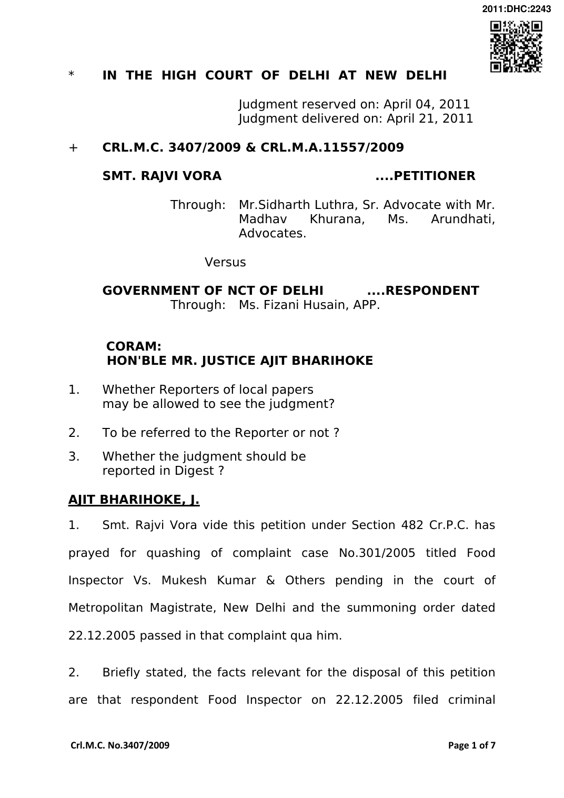

complaint 301/2005 under Section 7 and 16 of Prevention of Food Adulteration Act 1954 (hereinafter referred to as the “PFA Act”) against nine persons including the petitioner for alleged violation of Section 2(a)(j) and Section 2(ix) (j) of the PFA Act 1954 and also Rule 29 of PFA Rules 1955.
- It is alleged in the complaint that on 15.01.2005, respondent Food Inspector purchased a sample of “Mango Crush” allegedly manufactured by M/s. Mapro Foods Pvt. Ltd, for analysis from one Mukesh Kumar of M/s. Shivam Enterprises (vendor) where the said food article was stored for sale. The sample comprised of three original sealed bottles of “Mango Crush” of 700 ml each which were properly labelled and taken into possession.
- That on 17.01.2005, one counterpart of the aforesaid sample of food article was sent to the public analyst, Delhi for analysis. The public analyst vide his report dated 27.01.2005 opined although there was no standard prescribed for mango crush under Appendix B to the PFA Act 1954, the sample contained added synthetic colour which is not permissible under Rule 29 of PFA Rules.
- It is alleged in the complaint that the sample was allegedly purchased by the vendor from M/s. Shivam Enterprises who allegedly purchased it from M/s. Manish Enterprises, Mali Wara, Chandni Chowk and M/s. Manish Enterprises had purchased the same from the manufacturing company i.e. M/s. Mapro Foods Pvt. Ltd.
- That on 22.12.2005, learned Metropolitan Magistrate took cognizance of the offence and issued summoning order against the petitioner and others. The petitioner is aggrieved of the aforesaid summoning order on the ground that at the relevant time there was no prescribed standard for fruit crush and the “Mango Crush” manufacture was regulated by Fruit Products Order 1955 (FPO) which lays down the standards of quality and procedure for manufacture of the impugned food article. The petitioner M/s. Mapro Foods Pvt. Ltd was holding a valid licence for manufacture of “Mango Crush” under the FPO 1955 and there is no violation of the terms and conditions of said licence or the provisions of FPO 1955. Thus, there was no occasion for summoning the petitioner for offences punishable under Section 7 and 16 of PFA Act 1954.
- Learned Shri Sidharth Luthra, Sr. Advocate appearing for the petitioner submitted that from the report of public analyst as also Appendix B to the PFA Rules, no quality standard for “Mango Crush” was provided and that being the case there could be no violation of provision of PFA Act and the rules framed thereunder. Learned counsel further submitted that there is no allegations of violation of quality standard in terms of “Fruit Products Order 1955”, as such no offence can be said to have committed by the petitioner. It is argued that initiation of prosecution of the petitioner is under misconception of law as there is no violation of Section 2(j) of the PFA Act as the sample that allegedly used in the food sample as per the public analyst is tartrazine which is a permissible colour under Rule 28 of PFA Rules. Further, learned counsel for the petitioner relying upon the judgment of Supreme Court in Hindustan Lever Ltd. Vs. Food Inspector and Another, (2004) 13 SCC 83 submitted that since no standards were prescribed under the PFA Act and PFA Rules for the fruit crush, prosecution of the petitioner with regard to the impugned food article applying the standards for other food articles would not be sustainable. Thus, the learned counsel for the petitioner have strongly urged for quashing of the complaint as well as the summoning order qua the petitioner.
- Learned APP, on the contrary, submits that there can be no dispute that mango crush squarely falls within the definition of food article as defined under Section 2(v) of PFA Act 1954. Learned APP has referred to Rule 28 and 29 of PFA Rules 1955 and submitted that user of tartrazine sunset yellow in food articles other than detailed in Rule 29 is prohibited and fruit crush does not fall within any of the food articles enumerated in Rule 29, as such by using the prohibited colour in the “mango crush” the manufacturing company of which the petitioner is the director has violated the provisions of Food Adulteration Act and the rules framed thereunder. Therefore, the petitioner is rightly being prohibited under Section 7 and 16 of PFA Act. Thus, learned APP has urged for dismissal of the petition.
- I have considered the rival contentions and perused the record. Copy of the report of public analyst is annexed to the petition. Its correctness is not disputed by the respondent. As per this report, the public analyst has opined that there is no standards prescribed for mango crush under Appendix B but the food sample contains added synthetic colour which is not permitted under Rule 29 of PFA Rules. The public analyst has not found any other defect or flaw in the sample. Perusal of this report indicates that the colour used in the sample is tartrazine.
- Rule 29 of PFA Rules 1955 reads thus:
- --------
- ---------
- Peas, strawberries and cherries in hermaticlly sealed container, preserved or processed oapaya, canned tomato juice, fruit syrup, fruit squash, fruit cordial, jellies, jam, marmalade, candied crystallised or glazed fruits;
- Non-alcoholic carbonated and non- carbonated ready-to- serve synthetic beverages including synthetic syrups, sherbets, fruit bar, fruit beverages, fruit drinks, synthetic soft drink concentrates;
- ----------
- ----------
- On reading of the aforesaid provision, it is clear that user of yellow tartrazine is permissible in fruits syrup, fruit squash and fruit cordial etc. Undisputably fruits squash and fruits syrups are the product prepared from fruit juice/puree or concentrate clear or cloudy obtained from any fruit or several fruits by blending it with nutritive sweeteners, water and with or without salt. Fruit crush is also a product made from the fruit or fruit juice/puree or concentrate of fruit juice only difference is that it contains mere pulp. Thus, there can be no distinction between the fruit squash, fruit syrup or fruit crush so far as applicability of the PFA Act and the Rules prescribed thereunder is concerned. My aforesaid view finds support from the definition of squashes, crush, fruit syrups/fruit sarbats and barley water given in A.16.21 of Appendix B incorporated in the Appendix B subsequently by an amendment in the year 2005, which reads thus: “A.16.21- SQUASHES, CRUSHES, FRUIT SYRUPS/FRUIT SHARBATS AND BARELY WATER means the product prepared from unfermented but fermentable fruit juice/puree or concentrate clear or cloudy, obtained from any suitable fruit or several fruits by blending it with nutritive sweeteners, water and with or without salt, aromatic herbs, peel oil and any other ingredients suitable to the products.”
- Taking into account that fruits squash/fruit syrup as also the fruit crush are derived from the ripe fruit, the standard applicable to all these products ought to be similar. Admittedly, at the relevant time, when the sample was taken, there was no standard prescribed for fruit crush. Therefore, under the circumstances it has to be treated at par with fruit products detailed in Rule 29(c) of PFA Rules and the standards applicable fruit squash/syrup/cordially ought to have been applied in the instant case. Otherwise also, it falls within the category of non-alcoholic fruit drink and is covered under Rule 29 of PFA Rules. Indisputably, as per Rule 29 (c) and (d) of PFA Rules, user of tartrazine, sunset yellow in manufacture of fruit squash, fruit syrup etc. and nonalcoholic fruit drink etc. is permissible. Therefore, by no stretch of imagination, it can be said that the petitioner or his company has violated the provisions of PFA Act or the PFA Rules framed thereunder.
- In view of the discussion above, I am of the opinion that summoning order dated 22.12.2005 of learned Metropolitan Magistrate is not sustainable under law. Accordingly, the summoning order and the proceedings emanating therefrom qua the petitioner is quashed.
- Accordingly, the petition is allowed.
(AJIT BHARIHOKE) JUDGE
APRIL 21, 2011 pst